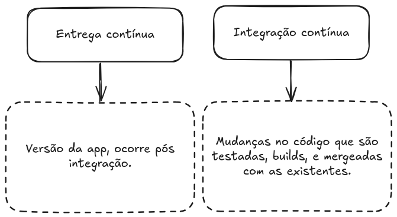
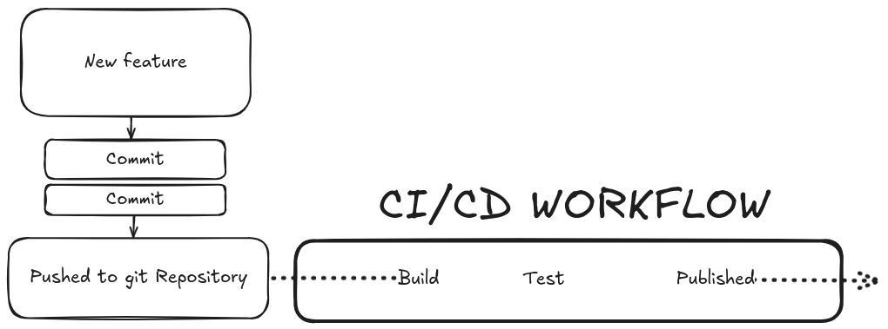
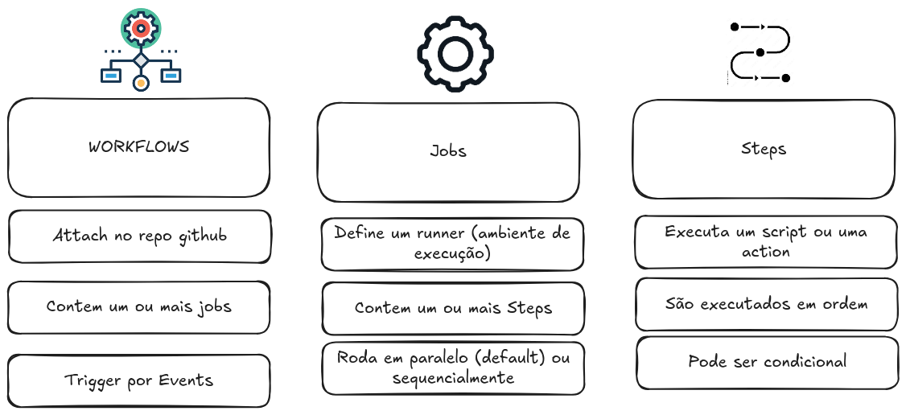
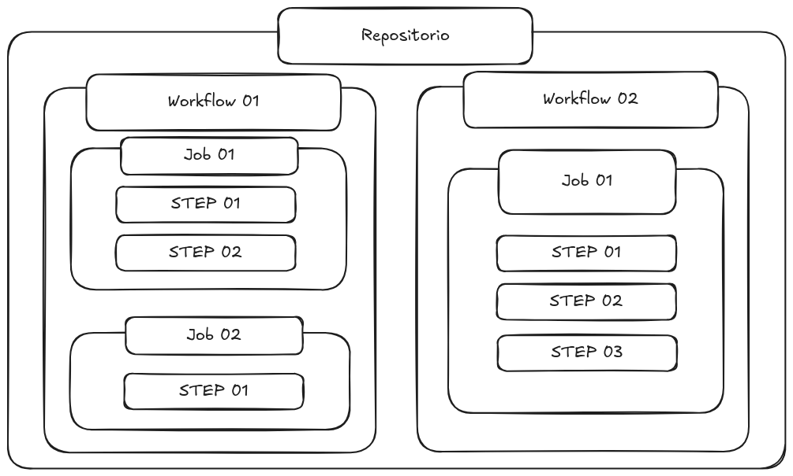
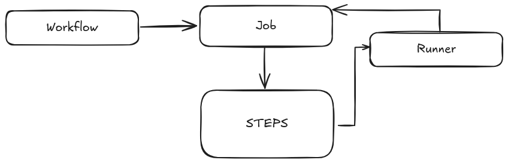

O que é?
GitHub Actions é uma plataforma de integração e entrega contínua (CI/CD) que permite automatizar a sua compilação, testar e integrar sua pipeline de implantação. É possível criar fluxos de trabalho que criam e testam cada pull request no seu repositório, ou implantar pull requests mesclados em produção.
CI/CD

Visualizando
 De maneira geral podemos seguir essa seguinte estrutura.
O que compõe github actions

Como é configurada?

Exemplo da action utilizada para servir esse material: https://github.com/uiuqM/treinamento-devops-epic/blob/main/.github/workflows/main.yaml
Visualizando

Pratica
- https://github.com/treinamento-devops-playground
Events (Workflow triggers)
| Relacionado ao repositório | Outros |
|---|---|
| push (commit) | workflow_dispatch (trigger manual) |
| pull_request (opened, closed...) | repository_dispatch (REST API) |
| create (branch ou tag) | scheduled (Workflow agendado) |
| fork (repo teve fork) | workflow_call (Chamado por outros workflows) |
| issues (issue aberta, deletada....) | |
| issues_comment (issue ou PR comment) | |
| watch (repo favoritado) | |
| discussion (dicussion criada, deletada ...) | |
| .... |
Job runners

Actions
Uma aplicação que performa uma tarefa (complexa) repetitiva.
Exemplos: https://github.com/actions/checkout https://github.com/marketplace?type=actions
Ficamos por aqui!
Dúvidas ou sugetões?